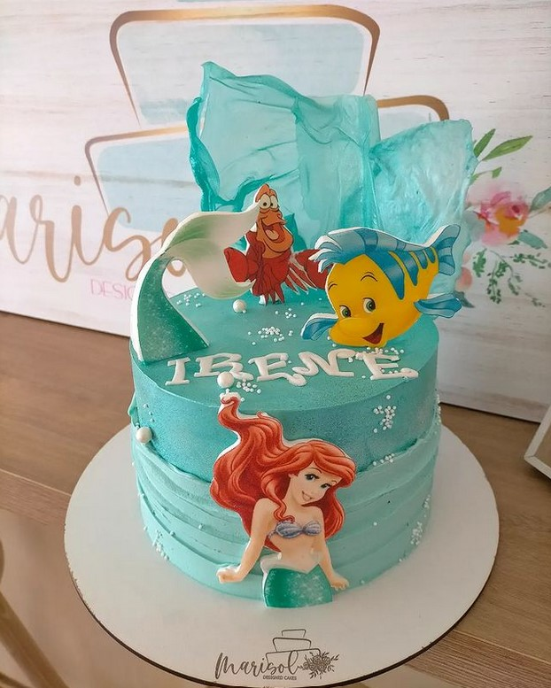
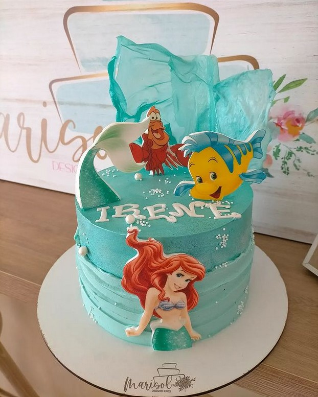

Ayudamos a nuestros clientes a encontrar el postre perfecto para que puedan disfrutar de momentos únicos mediante la elaboración de productos de alta repostería, bajo un diseño exclusivo y personalizado.


 

Se ha convertido en uno de nuestros sitios preferidos para merendar. El sitio es muy acogedor y muy bonito. Las chicas súper amables y rápidas. Las tartas buenísimas, mi favorita hasta el momento la de zanahoria, una auténtica pasada... Y los cafés también deliciosos. No es la típica cafetería y eso me encanta!
Rosana G.
Bonita y coqueta cafetería donde puedes tomar un buen desayuno o una rica merienda pues tiene unas tartas y dulces riquísimos. Se esta súper agusto y tranquilo tanto dentro como en la terraza y todo está super limpio. Además de ser cafetería tienen obrador donde hacen unas tartas espectaculares y tienen talleres infantiles para hacer cookies y dulces. La chicas son muy amables , atentas y muy simpáticas. sin duda las recomendaremos y regresaremos.
Maria P.
Una profesional como la copa de un pino. Trato inmejorable, dispuesta a cumplir las peticiones de sus clientes, se esfuerza en todo. En formación continua, positiva, emprendedora y luchadora. Todo está buenísimo, el café, las tostadas y de los dulces mejor ni hablar!!!! Tiene unas manos para enmarcar!! Me hizo la tarta para mi boda y fue un éxito total: un kilo de amor en azul. Mil millones de graciaaaassss!!!!
MariCarmen F.
Camino puente del palo 14-18 Churriana de la Vega